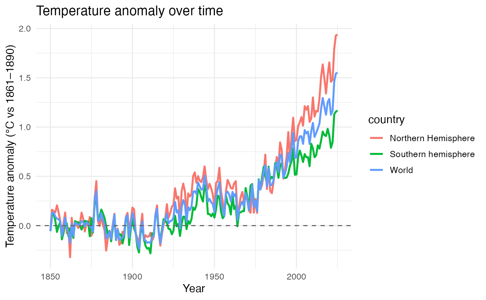

exploring-temperature-anomalies
exploring-temperature-anomalies.Rmd
ggplot(temp_data, aes(x = year, y = temp_anomaly, colour = country)) +
geom_line(linewidth = 1) +
geom_hline(yintercept = 0, linetype = 2, colour = "grey40") +
labs(
x = "Year",
y = "Temperature anomaly (°C vs 1861–1890)",
title = "Temperature anomaly over time"
) +
theme_minimal(base_size = 12)